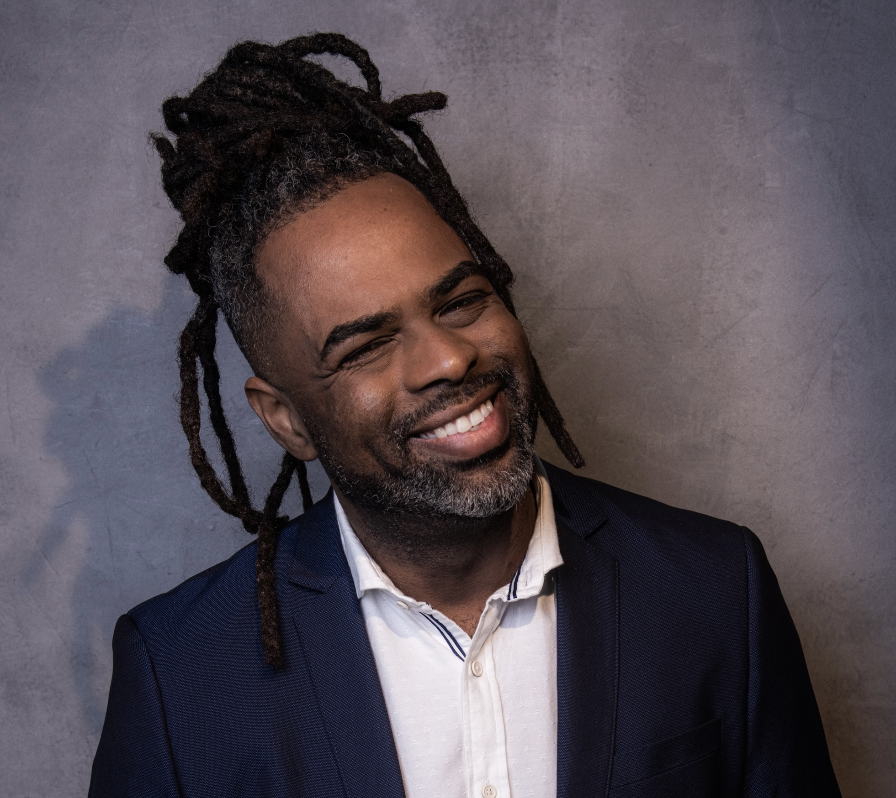
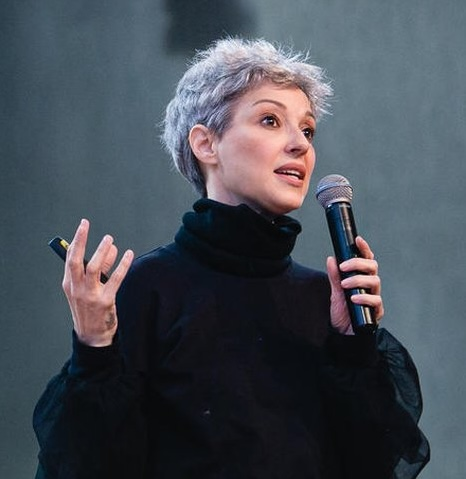
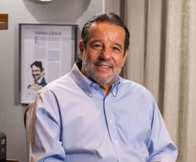

Summitencontro que provoca
Movimento Empreender 40+
O mundo mudou.
O empreendedor também.
Uma comunidade para quem entende que experiência não é ponto final: é repertório para construir negócios, relações e futuros.
21vozes no palco
1.000+conexões na edição
250 milpessoas impactadas
Conhecimento, conexão e experiências durante todo o ano.
Summitexperiências
movimento40+uma comunidade
em movimento
em movimento
Confrariasrelacionamento
Caravananovas rotas
01 / O movimento
Mais que um evento
Não somos um evento.
Somos um movimento.
Milhões de brasileiros vivem uma nova fase profissional após os 40 anos. São empresários, executivos, profissionais liberais e pessoas que decidiram empreender usando toda a experiência que acumularam.
O Empreender 40+ existe para conectar, inspirar e desenvolver essa geração - em cada encontro, tela e conversa.
Veja o impacto que já construímosUm ecossistema conectado
Onde a experiência encontra
o próximo passo.
Encontros, conteúdo e comunidade funcionando como uma rede que permanece ativa muito além de uma única data.
Caravanao movimento ganha rota
Confrariasrelações que permanecem
Canalconteúdo em movimento
Siteconteúdo para continuar
o centro da rede conexão · repertório · futuro
conexão · repertório · futuro
Todas as frentes se alimentam. Uma ideia vira conversa, uma conversa vira encontro e um encontro cria novas possibilidades.
02 / O impacto
Resultados da edição 2026
Impacto que segue
em movimento.
O que começou no palco se espalhou em encontros, telas, conversas e novas oportunidades para quem decidiu continuar construindo.
Uma rede viva
de experiências
de experiências
Alcance do movimento
250mil
pessoas impactadas pelas conversas que nasceram no Empreender 40+.
palcoredemídiadigital
21vozes no palco
experiência compartilhada1.000+conexões na edição
gente que decidiu se encontrar12h+de conteúdo ao vivo
ideias que continuam reverberando Edição 2026
ao vivo



21vozes
no palco
no palco
ideias, repertório
e novos começos
Summit Empreender 40+
O palco onde
a bagagem vira avanço.
O maior Summit de empreendedorismo da geração 40+ do Brasil. Em 2026, Porto Alegre recebeu 21 nomes que transformaram experiências de vida em conversas sobre negócios, reinvenção e futuro.
Conteúdo que provoca Networking que continua Histórias reais que inspiram
Reviva pelo canal03 / Caravana
Levar o movimento
até onde estão os
empreendedores.
Depois de consolidar o movimento em Porto Alegre, a Caravana Empreender 40+ aproxima lideranças, especialistas e empreendedores de diferentes regiões do Rio Grande do Sul.
Muito além de palestras: relacionamento, troca de experiências, geração de negócios e fortalecimento dos ecossistemas regionais.
Rota da CaravanaRio Grande do Sul
Alegrete
Santa Maria
Passo Fundo
Bento Gonçalves
Pelotas
Imbé
04 / Confrarias
A comunidade em volta da mesa
Uma mesa.
Muitas possibilidades.
Confrarias são encontros exclusivos que reúnem empresários, empreendedores e lideranças em Porto Alegre para transformar uma boa conversa em conexão real.
conversa
negócios
ideias
comunidade
confraria40+conhecimento
em circulação
em circulação
Cerca de 40 convidados
Encontros mensais
Muito além de encontros
Relações que não terminam quando a noite acaba.
Em cada edição, um convidado especial conduz uma conversa relevante para quem empreende e lidera empresas em um cenário de transformação constante.
Conteúdo com profundidade Troca entre pares Oportunidades de negócio
Quero participar da próxima O que acontece em uma Confraria
Chegadas que conectam
Uma mesa aberta para conversas que começam antes da programação.
Ideias que provocam
Convidados especiais e temas relevantes para o momento de cada negócio.
Vínculos que continuam
Relações que avançam para parcerias, trocas e novas oportunidades.
05 / Canal do YouTube
O movimento
continua vivo.
Entrevistas, histórias inspiradoras, especialistas e conversas relevantes para ampliar o alcance do movimento e construir uma biblioteca permanente de conhecimento.
Acessar canal Mais recente no canal
Vídeo em destaque
Carregando o último vídeo…
Atualizando o canal
06 / Presença contínua